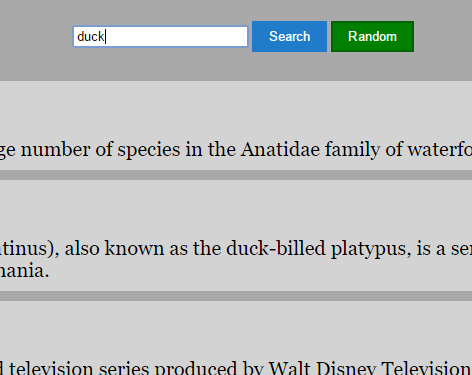

Ryan Holland
Web Developer
I made a Chrome extension that filters every page you visit to block spoilers from movies, TV, or sports.
You give it whatever keywords you want (like the names of a show's characters), and it replaces them and text around them with "[TEXT BLOCKED]".There were some similar extensions in the Chrome store, but they had mixed reviews, hard-coded keywords, and often did not work on social media. Mine works for any websites and keywords, without blocking the entire page when it detects something.
It works by storing the user's keywords in the localStorage object, passing them from an omnipresent background script into each webpage's injected script, parsing them into regular expressions, and iterating through the DOM text nodes looking for matches. It runs this search once every second; this allows it to work on dynamically-loaded social media feeds and comment sections, a feature the similar extensions lack. It runs only on the active Header and causes no detecHeaderle drop in performance.
I really enjoyed making this, because it was my own idea rather than a challenge, and because it is something I (and hopefully others) would actually use. It took about five days of constant Googling, reading documentation, and testing. I used vanilla JavaScript.
See code on Github
Tic-Tac-Toe
The computer AI begins by moving randomly, but makes smarter decisions as difficulty increases, until the best outcome you can hope for is a tie. Difficulty increases as you win games, or you can change it manually. I used a lot of CSS and JS.See code on Codepen
"Simon" game
It flashes buttons in a random sequence; you have to repeat them in order. "Strict Mode" means you have to start over when you answer incorrectly. I used Bootstrap (for its grid system) and JQuery.See code on Codepen

See code on Codepen
Wikipedia searcher
It uses the Wikipedia API to search for articles matching whatever the user types into the search box, updating as they type, letter-by-letter, like Google Search's Auto-Complete function. I used JQuery.See code on Codepen
Other projects:
Web dev newsfeed: Really just a CSS styling of a newsfeed API. Articles are ranked by age, and highlighted by upvote count.A calculator, or should I say a COOLculator? ... CalCOOLator?... I probably shouldn't.
Local weather viewer, using the HTML5 feature of getting the user's location, and a weather API.
Twitch stream status viewer, which uses an API to show whether a list of streamers are online. This was the first project where I had to use callbacks and wrangle with the asynchronous nature of JavaScript.
Pomodoro timer, a countdown that tells you when it's time to chillax and when it's time to workax.
A quote generator, dispensing the ancient wisdom of the volcano.
I made several websites for fun when younger, mostly related to video games, using basic HTML or IDEs like DreamWeaver. I also did a ton of algorithm exercises visible on my profiles at Free Code Camp and CodeCademy. And, of course, I made this page from scratch in Sublime Text 2... Well, everything except the script for smooth-scrolling-without-JQuery.
About Me
I grew up on computers because my dad is a programmer (and mom is a graphic designer), but I focused on art and music, perhaps as a form of rebellion against the family trade.
I graduated with a BSc in Geology from the University of Houston in Summer 2015 (having taken Calculus 1, 2, and 3), but the weak oil market inspired me to try to boost my resume with programming skills. A few loops later, I fell in love with it and decided to make it my career.
I have worked as an art teacher, guitar tutor, waiter, and bartender. My hobbies include reading, jamming with friends, hiking, and gaming. I am interested in a junior dev position or apprenticeship.
I graduated with a BSc in Geology from the University of Houston in Summer 2015 (having taken Calculus 1, 2, and 3), but the weak oil market inspired me to try to boost my resume with programming skills. A few loops later, I fell in love with it and decided to make it my career.
I have worked as an art teacher, guitar tutor, waiter, and bartender. My hobbies include reading, jamming with friends, hiking, and gaming. I am interested in a junior dev position or apprenticeship.